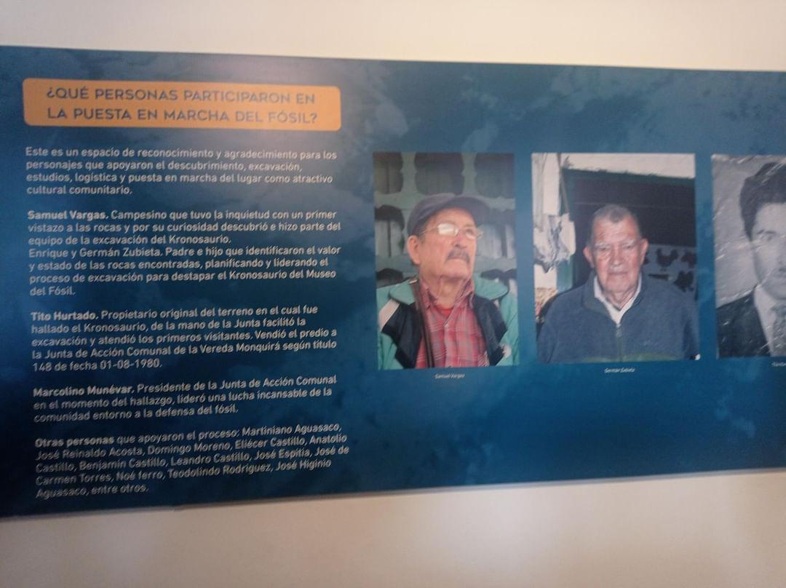

Infografia
Infografia museo y pozos
Viaje al Pasado en Nuestras Tierras
¿Qué es el Museo del Fósil?
El Museo del Fósil es un museo comunitario que fue establecido hace 47 años. Su origen está vinculado con el hallazgo del cráneo de un reptil marino del período Cretácico. Samuel Vargas, el primer campesino que descubrió la roca, inició la excavación que reveló la aleta y parte de la columna vertebral del reptil.
Historia del Museo del Fósil de Villa de Leyva
Descubrimiento y Fundadores
El 5 de junio de 1977, Samuel Vargas tropezó con unas rocas y descubrió la parte de la aleta y la columna vertebral de un reptil marino. German Suvieta y su hijo identificaron el valor de las rocas y planificaron la excavación. Tito Bernal, tras tres años de lucha, vendió su lote en 1980 para conservar la pieza.
Marco Elino Monear, presidente de la junta, lideró la lucha para preservar el fósil. Inicialmente, se cubrió el hallazgo con lonas para evitar su deterioro y se levantó una cubierta para los visitantes.
Enrique y German Suvieta dirigieron la excavación del Monquirasaurus boyacensis, un reptil del período Cretácico.
Monquirasaurus boyacensis
Este reptil marino mide 7.6 metros desde la punta del hocico hasta la cola, y su cráneo alcanza 3 metros. Con una cola de 12 metros, probablemente vivió entre 70 y 80 años. Se alimentaba de peces, amonitas y tortugas. Su preservación como fósil se debe a la absorción de minerales y la formación de roca sedimentaria.

Amonitas
Las amonitas son moluscos con conchas enrolladas y eran alimento para los reptiles marinos. Su presencia es significativa en los fósiles encontrados.
Brachiosaurus leivaensis
El Brachiosaurus leivaensis es una especie de dinosaurio que se ha encontrado en la región de Villa de Leyva. Este dinosaurio herbívoro, conocido por su gran tamaño y cuello largo, es uno de los fósiles destacados del museo. La pieza exhibida incluye parte de la columna vertebral, lo que proporciona información sobre su tamaño y postura.

Fósiles de Tortugas Marinas
En el Museo del Fósil también se pueden encontrar fósiles de tortugas marinas que vivieron durante el Cretácico. Estos fósiles ofrecen una visión de la diversidad de vida marina que coexistió con los grandes reptiles como el Monquirasaurus.

Vida Marina en el Cretácico
Durante el Cretácico, el área donde se encuentra Villa de Leyva estaba cubierta por un mar profundo. Esto permitió la formación de diversos tipos de fósiles, incluidos corales, moluscos y restos de grandes reptiles marinos.
Pozos Azules
Ubicación
Los Pozos Azules se encuentran a las afueras de Villa de Leyva. Son un atractivo turístico conocido por sus aguas cristalinas y la belleza del paisaje.
Actividades
En los Pozos Azules, los visitantes pueden disfrutar de actividades como el senderismo, paseos en kayak y exploración del entorno natural. Es un lugar perfecto para disfrutar de la biodiversidad de la región.
Consejos
Se recomienda llevar protector solar y suficiente agua, además de respetar el entorno natural y no dejar basura en el lugar.
Pozos Azules
¿Qué son?
Los Pozos Azules son un conjunto de lagunas artificiales ubicadas a pocos kilómetros de Villa de Leyva. Estas lagunas presentan un color azul intenso debido a los minerales presentes en el agua y el suelo.
Origen
Las aguas de los Pozos Azules adquieren su color por la reflexión de la luz solar y la presencia de minerales. Estas características únicas los convierten en un atractivo turístico.
Juego de Memoria: Encuentra los Fósiles
Encuentra los pares de fósiles idénticos haciendo clic en las tarjetas.